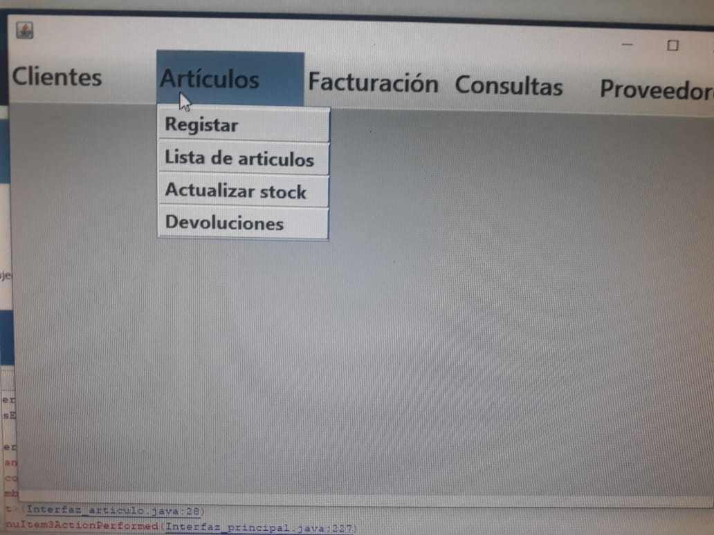

Seminario de Solución de Problemas de Sistemas Operativos de Red
D05
ACTIVIDAD 4

Instalar java y desarrollar un punto de venta básico que funcione en windows y linux.
Introducción
Instación en Windows 10
Instalación en Lubuntu
Introducción
Java es un lenguaje de programación y una plataforma informática comercializada por primera vez en 1995 por Sun Microsystems. Hay muchas aplicaciones y sitios web que no funcionarán a menos que tenga Java instalado y cada día se crean más. Java es rápido, seguro y fiable. Desde portátiles hasta centros de datos, desde consolas para juegos hasta súper computadoras, desde teléfonos móviles hasta Internet, Java está en todas partes.
Para conseguir Java has click
aquí
Los puntos de venta son sistemas que ayudan a automatizar el proceso de salida y cobro de la mercancía en las tiendas departamentales, comercios, restaurantes y otras instituciones.
El punto de venta utilizado en está actividad lo podemos encontrar
aquí por último cabe mencionar que para poder codificar en java usaremos el software netbeans el cual lo podemos adquirir
aquí
Instalación en Windows 10
La instalación de Java en Windows es sencilla, solo basta con hacer doble click en el ejecutable que descargamos de la página oficial y darle en instalar.
Esperamos unos minutos a que la instalación termine.
Después de unos minutos tendremos Java instalado.
Ahora instalaremos Netbeans para ejecutar el código que descargamos del punto de venta, basta con descargar la versión con el jdk incluido y darle doble click.
Esperamos unos minutos a que la instalación termine.
Abrimos el punto de venta.
Ejecutamos el punto de venta y damos por terminada la instalación de Windows.
Instalar en Lubuntu
Para instalar en Lubuntu la primera parte la realizaremos mediante la consola, en primer lugar instalaremos el jre con el comando "sudo apt-get install default-jre".
Después instalaremos el jdk con el comando "sudo apt-get install default-jdk".
Posteriormente damos permisos al archivo netbeans que descargamos con el comando "chmod +x" y lo ejecutamos.
Se abrira un instalador gráfico.
Aceptamos los términos y condiciones e iniciamos la descarga.
Aceptamos los términos y condiciones e iniciamos la instalación.
Esperamos unos minutos a que la instalación términe.
Ahora podemos abrir la aplicación para ejecutar el punto de venta.
Con esto damos por terminado el tutorial.
